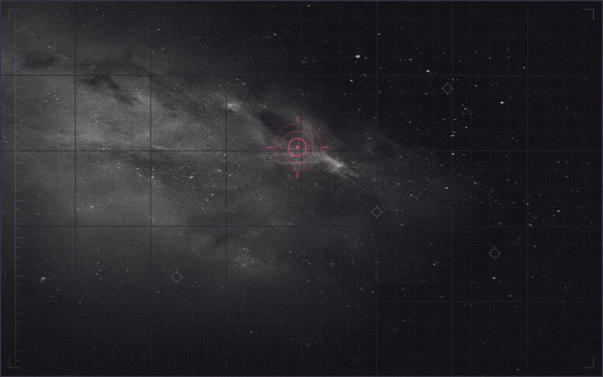

Deepfield reads the design·craft toolkit as a deep-sky observatory plate — a dark, year-2200 field notation, not a website. The whole page is one instrument sheet; every skill is a numbered catalog entry, plotted rather than marketed. You are meant to feel you are standing at a large instrument at night, reading a faint, exact signal.
Its register is cold, vast, precise, and quiet. The notation is the entire point — it is expressive — but it is disciplined: it never shouts. Bone marks and terse mono labels sit on a warm-void ground; a single magenta thread carries every systematic reading; one warm gold spark, spent exactly once, is the lone human warmth against the cold. It signals rigor and restraint — a look for people who trust measured things.
The vocabulary · the fixed move-set
Warm-void ground
the dark stage, engineered as figure-ground — never treated as empty space.
Bone marks
off-white ink and plotted points; the readable subject on the void.
Coordinate lattice
a faint radial and rectilinear grid the field is plotted against.
Registration rings
concentric scan-rings that locate and lock each node.
Tick-combs
graduated rulers; the continuous left declination scale binds the sheet.
Catalog glyphs
small field-marker symbols that tag each reading in the notation hand.
Magenta signal
the one systematic accent — it marks every true signal point.
Gold pop
one warm spark, spent once, on the single most load-bearing reading.
Field of use · where it reads true, where it fails
Dashboards that must feel measured, not busy or salesy.
Editorial data pieces & research tools where rigor is the message.
Anything signalling precision and restraint.
Wrong choice
Warm, friendly consumer brands — the cold reads as distant.
Playful or expressive products — the discipline reads as severe.
Dense transactional UIs needing warmth and speed over atmosphere.
Anything needing photographic richness or easy approachability.
02
PLATE 02 · DEVELOPING-STYLE · i
Developing-style
Developing-style invents a new, ownable look from a blank page — not applying a house style, not following an existing brand. Its one principle: a treatment reads as distinctive only by deviating from the surrounding convention, so the method is always the same shape — learn the convention, then break from it.
Reach for it when a brief asks for something unlike anything or recognizable, or when output keeps landing generic and derivative. The method runs in order: map the convention → imitate-then-deviate from an unfamiliar domain → reduce to a small vocabulary → hold a few constants — and the result must be novel and coherent: distinctive, not merely different.
Demo · the four-step method, run on Deepfield itself
01 Convention mapped
Generic dark-SaaS chrome
Name the surrounding norm first — sticky nav, hero + CTA, drop-shadow cards, rounded dashboard tiles. You cannot deviate from what you have not named.
02 Deviation source
Star-catalog plates
Study a domain far from web design — observatory logbooks, deep-sky survey notation. Imitating the unfamiliar restructures the layout instead of restyling a page.
03 Reduced vocabulary — the fixed move-set
The whole style reduces to a small, repeatable set of marks — moderate constraint, held everywhere. The signature is the move-set, not a hero flourish:
void ground
the stage
bone mark
the subject
lattice
coordinate grid
tick-comb
graduated scale
registration ring
locates a node
catalog glyph
tags a reading
magenta signal
1 · systematic accent
gold pop
1 · page-wide
04 Held constants — what never changes
The individual hand lives in the constant, minor handling repeated across every plate — pick a few, hold them everywhere:
Warm-void ground — always the stage; never a light or neutral surface.
Mono notation is the voice — labels, catalog index, and data are mono.
Content is type + plotted points — the reading is the content, nothing else.
Exactly one magenta signal + one gold pop — one systematic accent, one warm spark.
No website chrome — no shadow-cards, no hero-CTA grammar, no SaaS button bars.
03
PLATE 03 · COMPOSITION · ii
Composition & design theory
Composition owns the arrangement — where every mark sits and why, so the whole field reads as one deliberate piece and not an inventory of parts. The load-bearing idea: meaning lives in the arrangement, not the pieces. Three identical lines become a triangle, an “H,” or a table depending only on how they are joined. This lever holds hierarchy, gestalt grouping, figure-ground, tension, and the structural signature — and it answers to one governing rule: name the single takeaway, then make every element serve it, effortlessly, or cut it.
Reach for it when composing any artifact where arrangement carries meaning — a poster, an identity, a data report, a screen — or to diagnose why a layout reads generic, cluttered, or derivative. It defers colour to perception-and-color, type to typesetting, chart-forms to charting, and screen navigation to ux; it decides where things go, in what relationship, and why.
Demo · this page is the specimen — its own structural signature, annotated
1Declination scale. The continuous left ruler carries every plate number — one spine down the whole sheet (continuity).
2Registration border. A bounded field on the void — each plate a common region, so 13 read as one set.
3Corner marks. Four registration ticks lock the frame — repetition is the family resemblance (similarity).
4Catalog index. Mono PLATE nn · NAME · roman — the constant that names each entry.
5Ring-echo. A faint echo of the master chart opens each head, tying every plate back to Plate 00.
Gestalt · proximity + common-region
Why plates cohere
Same marks; a shared frame binds each cluster into one thing. The border does the grouping — no label needed.
Gestalt · continuity
The rail threads the eye
One unbroken line down the margin routes reading top-to-bottom, sequencing the plates into a single instrument sheet.
Figure-ground
Bone marks on warm void
The void is engineered as ground; bone and one magenta signal read as figure. The dark is the subject's stage, not empty space.
Hierarchy, aimed: the eye enters at the bright catalog index, drops through the terse body, and lands on the single gold pop — the one most load-bearing reading, spent once on the whole page. One takeaway per plate; one instrument across thirteen.
04
PLATE 04 · COLOR · iii
Colour & perception
Colour & perception owns two orderings — pick the encoding before the colour, and the contrast before the hue. Position and length read a quantity accurately; area and colour do not, so colour is a last-resort channel for magnitude and luminance does the reading, not hue. The lever also holds palette construction (sequential / diverging / categorical), the ground, the single reserved accent, and colour-vision-deficiency safety. Evidence-based — Cleveland & McGill, Kovesi, ColorBrewer, WCAG, the CVD literature — not taste.
Reach for it to choose or audit any colour, contrast, palette, background, or visual encoding — and to adjudicate colour-and-eye claims (dark mode, blue light, “easy on the eyes”) against evidence. It holds three non-negotiable floors: WCAG AA (≥4.5:1 body text, ≥3:1 large text & graphical marks), never colour alone to carry meaning, and CVD-safe sets. Defers chart form to charting, type to typesetting, layout to ux.
Specification of inks · measured on the void ground
Every token's real WCAG contrast against void #141217, with its CIELAB lightness (L*) and its verdict — legible as text, or marks-only.
WCAG 2.x relative-luminance ratio, contrast against void #141217. Four inks clear AA body text (4.5:1); the two structural tones sit below 3:1 and are used only as decorative frames & lattice — never to carry data or bound a control (WCAG 1.4.11 exemption).
Specimen
Token
Role
L*
Ratio / void
Verdict
--bone #e9e6dd
body & heading ink
91
14.91:1
AA text · PASS
--gold #e6a93a
the one warm pop
73
8.95:1
AA text · PASS
--soft #938c9b
notation / labels
59
5.73:1
AA text · PASS
--sig #ff3d7a
systematic accent · signal
58
5.49:1
AA text · PASS
--ln #3a3445
frames / hairlines
23
1.56:1
marks-only
--lat #241f2d
lattice / ring-echo
13
1.16:1
marks-only
--g #141217
warm-void ground
6
—
ground
Colour-vision-deficiency · does the palette hold?
Simulated at full severity (Machado 2009). ~8% of men have CVD, so the palette must survive it — and it does, because meaning rides on lightness, not hue.
Ink
Normal
Deuteranopia
Protanopia
Tritanopia
--sig magenta
L* 58
#a29975
#70737b
#ff0057
--gold pop
L* 73
#cfba3e
#c0ab29
#fa9893
--bone ink
L* 91
#e9e6dd
#e8e5dd
#ebe4e3
Under deutan/protan, magenta and gold both drift toward muddy yellow — their hue difference collapses. But gold stays lighter than magenta in every simulation (L* 73 vs 58; a luminance gap of 1.45–2.06:1), so they never merge — and the design never asks a CVD viewer to tell them apart to read a value: magenta is the systematic accent, gold is one isolated pop, and both signal points also carry position, shape, and a direct label (WCAG 1.4.1). Lightness-order carries the meaning; no CVD viewer is stranded.
Encoding an ordered quantity · right vs wrong
Same seven ranked readings (1→7, faint→bright). One encoding lets you rank them at a glance; the other does not.
lightness-ordered ramp
1234567
Monotonic L* (13→91). Lightness carries the order, so rank is instant — and it survives greyscale and every CVD type. Kovesi 2015; the dark-is-more expectation.
rainbow / hue-for-order
1234567
Non-monotonic luminance (L* 29→53→62→74→85→67→50 — peaks at 5, not 7). No perceived value order, and false edges where hue jumps. Borland & Taylor 2007.
The pop · resolution & verdict
Pop-rule · one pop, one point, page-widePASSgold #e6a93a on void = 8.95:1 (AA-pass)
Round 9 spent magenta as the signal and gold broadly as annotation — two general accents. Round 10 ruling holds: magenta --sig is the single systematic accent (signal points, the pole, the sparkline). Gold --gold/--pop is the ONE contrasting pop, spent exactly once page-wide — Plate 00, the master chart’s $5 · 40M reading. Every other former-gold mark demotes to --soft notation grey.
Gold reads as a warm-vs-cold contrast, not a second accent: hue ~41° amber against a cold register (magenta ~340° + neutral bone + plum void). A design already carrying one vibrant note earns a pop that contrasts it by temperature — so the warm spark separates by register, not by joining the accent family. On void it measures 8.95:1, the highest-contrast chromatic ink in the set. Verified here on the temperature-contrast and ratio tests.
Fallback (unused): had gold failed the contrast-against-register test, the ruling was to drop gold entirely and let magenta stand as the lone vibrant pop. Gold passes, so the fallback stays parked. The gold chips on this plate are labeled specimens — the palette teaching itself — not the live spend; the single live pop belongs to Plate 00.
05
PLATE 05 · TYPE · iv
Typography & type-setting
Type-setting sets the reading — face, size, measure, leading, and hierarchy — so a plate is legible before it is anything else. The proven levers are size, x-height, spacing, and a clear hierarchy; the face itself carries voice, not speed — controlled work finds no universal “faster” font, and reader preference does not predict reading rate (serif-vs-sans is a myth once x-height is matched). Legibility before personality: spend the measurable levers first, choose a face for tone second.
Reach for it wherever type must be read or numbers must align — a page, a table, a chart, an instrument plate like this one — to settle which faces, at what scale, measure, and leading. It defers colour and contrast to perception-and-color, chart form to charting, and the page grid to ux; it owns the type inside all of them: a ≥14px reading floor, tabular figures on every numeric column, and a 45–75-character measure on prose.
Body base — the reading anchor16.0px1.000rembody · base
Field-note prose15.0px0.938rembody · field-note
Caption · data floor14.0px0.875remcaption · data floor
Catalog index11.5px0.719remmono · index
Micro furniture10.9px0.680remmono · furniture
Steps ride a ~1.3 major-third feel at display, then fall to whole-pixel increments at reading sizes — a non-constant ramp, kept for consistency, not because a ratio is “correct” (type scales are a design decision, not a finding). Readings hold the ≥14px floor; only tracked, uppercase mono furniture — the catalog index and registration labels — sits below it, where letter-recognition, not prose reading, is the job.
Specimen · measure & leading
66ch →|
The measure is the number of characters on a line. Short lines aid comprehension; long lines read as fast or faster on screen with no comprehension penalty — so the 45–75-character band is an honest compromise, not a law. This column is set to about sixty-six characters, Bringhurst’s “66,” at fifteen pixels with 1.6 leading. When the viewport is narrower than the target, the column reflows to fit rather than forcing a sideways scroll.
MIN · 45chTARGET · 66chMAX · 75chWCAG AAA CAP · 80ch
Leading · 1.2 — too tight
Lines crowd; the eye loses its return sweep and skips or re-reads. Fine for big display, wrong for prose.
Leading · 1.6 — this sheet
Open enough that each line is easy to find; within the proven 1.4–1.6 prose band and WCAG-1.4.12-safe at 1.5×.
Leading · 1.8 — over-open
Lines drift apart and the paragraph stops reading as one block; reserve for small text on a long measure.
Body leading 1.6 (≈ 24px on a 15px body). Prose is left-aligned, ragged-right — never justified (WCAG 1.4.8): justified screen text opens rivers of uneven spacing.
Specimen · numerals — proportional vs tabular
Field readings · apparent magnitude (m), same values, three figure settings
Object
Proportional
Tabular · tnum
Plex Mono
Sirius
−1.46
−1.46
−1.46
Vega
0.03
0.03
0.03
Polaris
1.98
1.98
1.98
NGC 7000
4.00
4.00
4.00
Field star
8.40
8.40
8.40
Faint source
114.20
114.20
114.20
Proportional figures give each digit its own width — a 1 is narrow, a 0 wide — so a column of them jitters and the decimal points wander. font-variant-numeric: tabular-nums fixes every digit to one advance width; the decimal points line up and the eye can compare down the column. Plex Mono is tabular by construction — every glyph is already one width. The rule: tabular lining figures on every numeric column — tables, axes, dashboards, readings.
06
PLATE 06 · CHARTING · v
Charting
Charting picks the graphical form that answers the question, then draws it so nearly all the ink is data. First the form: match the reader's question — trend over time, ranking, distribution, relationship, part-to-whole, or deviation from a norm — to a canonical shape (a range-frame line, a Cleveland dot plot, small multiples, a slopegraph, a bullet graph). Then the craft: erase every stroke that isn't carrying data — no chart border, no heavy grid, no legend the eye must ferry back to. Encode magnitude by position first, length next, area and colour last; label each series directly; prefer small multiples to overplotting. Colour itself is deferred to perception-and-color.
Reach for it whenever a set of numbers carries a question a picture answers faster than a table — a shape to see, a rank to read, an outlier to catch. Don't reach for it for a single scalar (that's a stat readout) or when the reader needs exact lookup (a table wins). Honesty is the floor, not a preference: no truncated bar baseline, no radius encoding a quantity, no dual-axis manufacturing a correlation, no inverted or stretched axis. The form must reveal the true signal, not decorate it.
Demo A · Range-frame line — one faint signal read over 18 nights
One honest takeaway: source DF-2200 brightened from 2.1 to a peak of 5.8 mJy — a ~2.7× rise — then flattened to 5.7 mJy after night 14. The axis carries a true zero, so the climb is read at its real scale, not an inflated one.
Demo B · Cleveland dot plot — sources ranked by nights detected
One honest takeaway: detection frequency falls off steeply — DF-2200 cleared threshold on every one of the 18 nights, while half the catalog was seen on 9 or fewer, down to DF-085 at just 2. Position on a shared zero-based scale ranks the eight at a glance; no pie, no legend.
PLATE 06 · v — both readouts hold the honesty floor: zero baselines drawn, direct labels over legends, one magenta signal, position before area. Charts as instrument readings, not dashboard widgets.
07
PLATE 07 · IMAGERY · vi
Imagery
Imagery is the image lever — it selects a good picture, critiques one, directs its tonal treatment, decides photo-vs-illustration, writes the alt text, and makes light coded illustration (SVG / Pillow). It does not generate photographs and is not a heavy photo editor. Its one governing test: the image must carry the message. A picture that does not advance the point is not neutral — decorative, off-brief, feel-good filler measurably hurts comprehension and gets skipped, so every image earns its place or is cut.
Reach for it to pick or judge an image, to run the like / not selection loop, to decide whether a subject wants a photo or an illustration, to direct a flat treatment (duotone, grayscale, grain, scrim), or to draw a light programmatic mark. It defers colour and contrast to perception-and-color, arrangement and figure-ground to composition, type over an image to typesetting, and page layout to ux — and it holds one floor of its own: every non-text element has a correct text alternative (WCAG 1.1.1).
Stance · Deepfield is illustration / notation-led — not photographic
Coded line-work, not photos. Imagery here is drawn as SVG notation in the instrument hand — coordinate lattices, plotted points, tick-combs, contour readings. A photograph would only be generic stock; the abstract, systematic subject wants an ownable illustration that stays in the plate hand.
If ever a raster: cold duotone, bone-on-void. Shadows map to the void ground, highlights to bone, with a hint of magenta only on the single signal. Never warm stock, never a golden-hour "feel-good" photo — warmth would break the cold, disciplined register.
No decorative filler. Every mark must carry a reading; an image that does not advance the plate is removed, not tolerated as texture.
Imagery serves the instrument, never decorates. The illustration is a field reading — a plotted plate — not an ornament laid over the notation.
Demo · a coded deep-field plate, drawn in the instrument hand
Alt text · informative illustration“A coded deep-field notation plate: bone catalog stars plotted on a coordinate lattice over warm void, a faint nebula drawn as brightness iso-contours rather than a soft glow, and one magenta signal star — catalog DF·07 — marked with a crosshair as the single reading of interest.”
This illustration is informative, so it carries its meaning through role="img" + aria-label holding the point above — not a picture-of description, and never alt="" (that is for decorative marks only, which the page's sigils and the left rail use). The alt string is reprinted here as a visible specimen so the plate can teach it; that specimen is aria-hidden so assistive tech is not told the same thing twice.
08
PLATE 08 · UX · vii
Interface, UX & layout
Instrument · the structural lever
Interface‑UX‑&‑layout fixes the structure a reading sits in:
page skeleton, navigation and wayfinding, the grid and spacing rhythm, visual hierarchy, data tables, and
interaction states — everything that governs where the eye lands first, next, last, and how the hand acts.
It defers chart form to charting and colour to perception‑and‑colour, and it holds the one
hard floor: adequate contrast, a visible keyboard focus state, a target the thumb can hit, and an order a
stranger reads in three seconds.
Reach for it when structuring any screen — page, app shell, or dashboard — or when a
layout already reads as cluttered, hard to navigate, or unpolished and you need to know why. It runs on
evidence (processing fluency, Fitts's law, Nielsen's heuristics, WCAG) with taste labelled as taste. This plate
is its own specimen: the sheet geometry below is measured off this page, and every control meets the floor.
Sheet geometry · plan view of this page
SHEET max-width
1180 px · centred
CONTENT column
≤ 1100 px · .df-cat
LEFT gutter
88 px · reserves rail 64 + 24
DECLINATION rail
64 px · tick-comb ruler
RIGHT pad
24 px
PLATE ↕ rhythm
34 px · between plates
PLATE body pad
26 px
PLATE head pad
22 / 26 / 16 px
RAIL tick-comb
12 px fine · 60 px coarse
BASE grid
16 px / 1.6 · 25.6 px line-box
REFLOW ≤760w
gutter 44 · rail 34
REFLOW ≤520w
rail hides · gutter 0
Controls · index · readings · actions
Field readings · plate 08 aperture · epoch 2200
Object
R.A. (h m s)
Dec (° ′ ″)
Mag v
S/N
Epoch
DF‑2200‑014
05 34 31.9
+22 00 52
8.41
214
2200.42
DF‑2200‑015
05 34 32.1
+22 01 07
12.06
61
2200.42
DF‑2200‑016
05 34 30.4
+21 59 44
9.88
143
2200.43
DF‑2200‑017
05 34 33.7
+22 00 18
14.72
22
2200.43
DF‑2200‑018
05 34 29.8
+22 01 55
11.30
88
2200.44
Read-only Tufte table — hairline rules, no grid escalation:
nothing here asks to be filtered or edited, so it stays a native <table> with
th scope (accessible for free) rather than a data-grid.
:focus-visible · 2px —sig ring (kit default; live on every control)
AA contrast on all ink ✓ (bone-on-void ≈ 15:1,
soft-on-void ≈ 5.7:1 — perception-and-colour owns the measured ratios) ·
one systematic accent ✓ (magenta reserved for the
08 · UX you-are-here state; primary action leads by inverted contrast, not a second hue) ·
no horizontal scroll at 480w ✓ (schematic + table scroll inside their own containers).
09
PLATE 09 · BRANDING · viii
Branding & visual identity
Branding directs the identity — it does not draw it. This lever decides what the mark should be (its concept, its fit to the brand's personality, how much visual complexity the exposure budget can afford, and whether a redesign will cost more than it earns) and whether every surface reads as one voice. It is advisory: it briefs the making — drawing the mark to imagery, inventing a new style to developing-style, generating texture to generative-imagery — then reviews what comes back for identity fit. Its findings are evidence-graded, separating adversarially-verified results [STRONG] from canonical-but-unverified literature [ESTABLISHED] and explicit [MYTH], a named study behind each.
Reach for it when you are designing or judging a visual identity — a logo's shape, descriptiveness, symmetry or complexity; the intent behind a brand colour; a redesign decision; reading or targeting a brand personality; or checking that a growing surface still holds one mark and one voice. It is the wrong tool for the final artwork (that is imagery), for colour science and contrast (perception-and-color), for type selection (typesetting), and for naming, positioning, taglines or campaign strategy — which it does not cover, and touches only where a claim breaks identity consistency.
The mark · celestial-pole reticle · holds 16px → plate
16 pxfavicon · tab
32 pxinline · index
120 pxplate mark
One resolution-independent vector: a ring crossed by two full-diameter hairs. The stroke scales with the mark, so the same geometry that ships as the favicon reads clean on the plate — no detail is lost or added between sizes.
Rationale · read through the branding evidence
Shape / descriptive
Abstract-suggestive, not literal. A sky-pole / instrument reticle — it says find position without drawing a telescope. A soft ring (containment) fused to a hard orthogonal cross (precision) puts the shape where the register promises: measured, exact.
Henderson & Cote 1998 [STRONG] — a less-natural, harmonious mark buys a feeling of knowing on a thin budget. Luffarelli et al. 2019 [STRONG] — congruent form → fluency → authenticity. Shape-fit: Jiang et al. 2016 [ESTABLISHED].
Complexity
Low — one ring, two strokes. It clears the 16px favicon intact and asks little of the exposure budget. Note the honest framing: low complexity is not proof of memorability — it lowers the cost of earning fluency, which is a budget advantage, not a memory law.
Janiszewski & Meyvis 2001 [STRONG] — complexity is a media-budget multiplier; simple marks earn fluency cheaply. Reber et al. 2004 [ESTABLISHED] — easy to process → liked. Elaboration stays moderate, not maximal (Henderson & Cote [STRONG]).
Symmetry
Radial, 4-fold. Symmetry is the evidence-backed default; asymmetry lifts only brands whose personality is exciting. Deepfield is cold and precise, not exciting — so symmetry is correct, and breaking it would fight the register.
Luffarelli, Stamatogiannakis & Yang 2019 [STRONG] — asymmetry helps excitement only; symmetry is the default otherwise.
Personality
Precise · cold · rigorous · navigational — carried by the form (registration geometry + restraint), matched to the confirmed mood. In the working vocabulary this reads as competence.
Aaker 1997 [STRONG] is the shared vocabulary — used with its documented caveat: a single brand's five-factor profile is provisional, and "competence" is not a safe cross-culture lever ([STRONG] critique, §H).
Redesign risk
Do not complicate it. The mark now runs identically across favicon → hero pole → plate registration. Adding descriptive detail would raise complexity (a budget cost), over-elaborate past the recognition optimum, and — worst — break the consistency that committed viewers punish hardest.
Walsh, Winterich & Mittal 2011 [STRONG] — commitment is a negative moderator: inconsistent redesigns take the biggest attitude hit. Measure commitment before touching it.
One-voice check · does the identity hold across the sheet?
Faviconring + full cross · signal
Hero polerings + cross-ticks · signal
Plate markregistration L · scaffold
COHERENT PASS. One grammar throughout — a ring met by orthogonal registration ticks — split by role, not by dialect: magenta carries the signal (the mark, the pole, plotted points); grey carries the scaffold (corner ticks, lattice, index rules). The favicon, the hero pole and the corner marks are one reticle seen at three jobs. No surface drifts off-brand.
Consistency ruling · the master-chart tagline
Conflict
The hero reads THE INSTRUMENT SET · ONE HAND, but the catalog below it documents 11 skills across 13 plates. A number the plate set immediately falsifies is a one-voice break — the hero contradicts the catalog it opens. "Five" was true of round 9's five-node sky; the catalog's growth is exactly what breaks it.
Ruling
Update — do not keep "five." The "five primary nodes" meaning is invisible to a reader counting plates; keeping it is an unforced contradiction. Move to a number-free phrasing that never goes stale and preserves · one hand, which is the load-bearing claim (one voice across many instruments — the round-10 thesis).
Recommended string
THE INSTRUMENT SET · ONE HAND Fallback, if the numeric-contrast rhythm is wanted: MANY INSTRUMENTS · ONE HAND. Avoid re-inserting any count — the toolkit is still growing. Graphic-composition owns Plate 00; apply there.
10
PLATE 10 · BRAND-ABSORPTION · ix
Brand absorption
The toolkit's one conditional lever. Brand absorption wakes for a single job: adopting an existing brand — a facelift, refresh, reskin, or any work that must still read, unmistakably, as them. It reads a brand from its real, shipping artifacts and codifies them into a binding Brand Direction the rest of the team executes against. It does not invent — an original, ownable look from scratch is developing-style's job, not this one. Absorb what is in front of you, not what you remember: a brand lives in its current materials, and a famous one may be a rebrand or two out of date.
Every capture has two halves, and the second is mandatory. The surface signature — colour, type, mark, imagery — is measurable, extractable, even scriptable. The hand — how the brand moves, its compositional and tonal logic — is not readable from pixels and is the half most easily lost. If you can't name it, you sampled the pixels; you didn't absorb the brand. Colour values defer to perception-and-color, face selection to typesetting, layout to ux — absorption records what is theirs, and sets the direction.
Demo · the capture run on THIS page — what absorption would file if Deepfield were the client
DIR-DEEPFIELD/01 · captured from the shipping plate · source: this page
BRAND DIRECTION — Deepfield
FIDELITYreads-as-them check, not taste
BINDS. When this direction exists, colour · type · layout · composition serve IT; house-style yields entirely. The four floors (AA · chart honesty · legibility · focus/target) still hold above it.
keep · warm-void ground · one magenta systematic signal · one warm pop spent once, page-wide. never · a second general accent; gold as broad annotation. (pop recorded, not spent here — it lives on Plate 00.)
Type
Bricolage Grotesquedisplay · instrument titles
Plus Jakarta Sansbody · readable field-notes
IBM Plex Mononotation · labels · index · data · glyphs
keep · three faces, no more; mono is the instrument voice, carries most labels & data; tabular figures on every number. never · a fourth face; proportional figures in tables.
Mark
The circled-plus pole sigil — the fiducial registration mark of the whole chart, the pole every plate radiates from. Also the favicon.
keep · magenta stroke · full-width cross · the clear-space ring. never · recolour off magenta · reset in a system font · fill the ring · rotate.
Imagery
Notation- and illustration-led: lattices, tick-combs, registration rings, plotted points — drawn, not shot. Cold. Colour lives as ink-on-void, never as a photograph.
keep · instrument marks · duotone-cold if any tone at all. never · warm stock photography · lens flare · people-in-an-office · a hero image behind a headline.
B · The handnamed — not readable from pixels
Voice
Cold, precise, quiet, terse. Field-notes from an instrument, not a pitch. Headings are labels; claims are measured; data is lowercase mono. One warm human spark against the cold — never a whole warm register.
keep · restraint · the exact number · the em-tick. never · exclamation · marketing verbs · "unlock / supercharge / delightful".
Structure
A plate catalog from one observatory: numbered registration-framed plates on one continuous warm-void sheet, each in the same hand. The signature is structural — registration frames + corner ticks, a catalog index on every plate, and a continuous declination rail binding the whole sheet. Content is plotted, not laid out: data as marks, headings as instrument labels, body as field-note text.
keep · everything is a plate in one instrument hand. never · website chrome — cards-with-drop-shadows, a SaaS button-bar, hero-with-CTA grammar, a docs-site block.
Fit test · hold any screen against this — judge reads-as-them in 30 s.values → perception-and-color · faces → typesetting · layout → ux
11
PLATE 11 · GENERATIVE · x
Generative imagery
Generative-imagery fills the toolkit's one gap. design-craft has no image model of its own, so imagery can only select or commission; this skill generates a raster — free and keyless, through an external service — for atmosphere, texture, and mood grounds. It is never used for anything a wrong detail would break: no accurate in-image text, no logos, no real people or brands, no charts, no exact counts. You composite real type and marks over a generated ground instead.
This plate is the collaboration made visible. generative-imagery generates the raw field; imagery directs the brief, accepts or rejects the result, and treats what survives into the observatory-plate hand. Two hands, one field — shown end to end below.
Pipeline · one field, two hands
RAW · UNGRADED
generative-imagery generates the raw field from a look-only brief — an on-theme atmospheric ground. No lattice, no grade; flat and a touch bright.
direct→treat

PLATE 11 · GEN-FIELDTREATED · PLACEDλ 656.3 · Hα◦ SIG
imagery grades it into the plate hand — cold bone-on-void duotone, coordinate lattice, registration ring, one magenta signal point. It now reads as an instrument plate, not a photo.
The direction imagery gave — brief · accept / reject
The brief handed to the generator — look only, assembled from palette + mood
monochrome grayscale deep-sky survey field · near-black warm void, faint diagonal band of pale nebula dust, sparse fine star speckle · high dynamic range, cold · quiet · minimal · matte, subtle astronomical grain · no colour, no text, no faces, no logos, no bright glow
imagery's verdict — accepted, rejected, treated
Accept — the field: faint diagonal dust, sparse stars, deep void. Good structure, grades cleanly.
Reject — an earlier ground's violet cast (it leaned pink-purple, off the cold register). Re-briefed to grayscale so the grade owns the colour, not the generator.
Treat — grayscale → cold duotone (void shadows → bone highlights), darkened until the field reads faint; magenta spent as one registration ring, never a bloom; composited as plate material with lattice, declination comb, and catalog label.
Governance gates — annotation, never a substitute for the image
Availability — checked first. The service is probed before generating (it returned reachable this run). If it is unreachable, imagery does not generate — the design is built without it. A plate must never depend on an outside service.
Director approval — passed. Never a naked prompt: the brief is assembled from the team's palette and mood, and the art-director judges every result on-register through render → look → refine. Off-register or cheap, it is discarded — no graphic beats a cheap one.
Minimal · supporting — held. Generated imagery is embellishment: a ground or texture, never the concept, never dominant. Here it stays a governed specimen inside the notation, subordinate to the plate.
Alt-text floor — imagery owns it. Role decides the alt, not the pixels. As pure ambient texture in a live layout this ground would be decorative — alt="", skipped by assistive tech. Here both images are the subject under discussion — the raw generation and the treated plate — so each earns a full descriptive alt that names what changed between them. A generated raster is still non-text content: WCAG 1.1.1 applies whether the pixels came from a camera, a pen, or a model.
12
PLATE 12 · HOUSE · xi
House-style templates
House-style templates is design-craft's reference library of its own house-look templates — cohesive, directional treatments the art-director and the builder pull from so a result feels like one body of work, and that anyone can reuse as a starting template. It is reference-only: no dedicated agent runs it; the art-director owns applying it, checking a design coheres with the set.
It is the plugin's one openly-subjective layer — its authority is declared taste, not evidence — and so the most overridable in the toolkit: it yields to the four floors (colour · type · charting · ux) and every evidence skill before it asserts anything of its own. The directional template set is built — five registered entries: Meridian · Ledger · Terminal · Deepfield · Prism. Each is a baseline, never a cage — a real design is expected to diverge from it wherever the brief demands. Read this plate as the intent plus Deepfield's own entry in that catalog.
Demo · Deepfield registered as one directional template
Status · built — 5 entries registered, the set complete
RegisteredEntry 04 / 05 · directional template
Name
The Deep-Field Notation Plate
Register
Expressive · cold · disciplined — reads as a precise instrument, never a poster that shouts. For people who trust measured things.
When to pull
Reach for it when measured data or a whole system must signal rigor and restraint — a catalog, a spec, a dashboard drawn as an instrument readout — under a cold, vast, quiet mood with one warm human spark. Wrong choice for warm, playful, or persuasion-first work.
Held constants
Warm-void ground · bone ink · one magenta systematic signal · one gold pop, page-wide. Bricolage Grotesque / Plus Jakarta Sans / IBM Plex Mono (the instrument voice). Registration-framed plates on a continuous declination rail · a mono catalog index on every plate. Notation hand — labels as instrument readouts, data as plotted points, terse field-note body.
The rest of the set — all registered
01Meridian
02Ledger
03Terminal
05Prism
5 registered · set complete — Meridian · Ledger · Terminal · Deepfield · Prism. Baselines to pull and diverge from as the brief demands — never cages.
design·craft · deepfield · plate catalog13 plates · one instrument hand · ✦